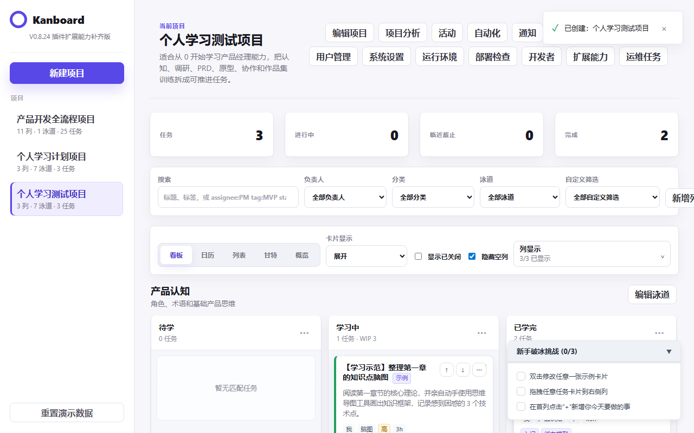
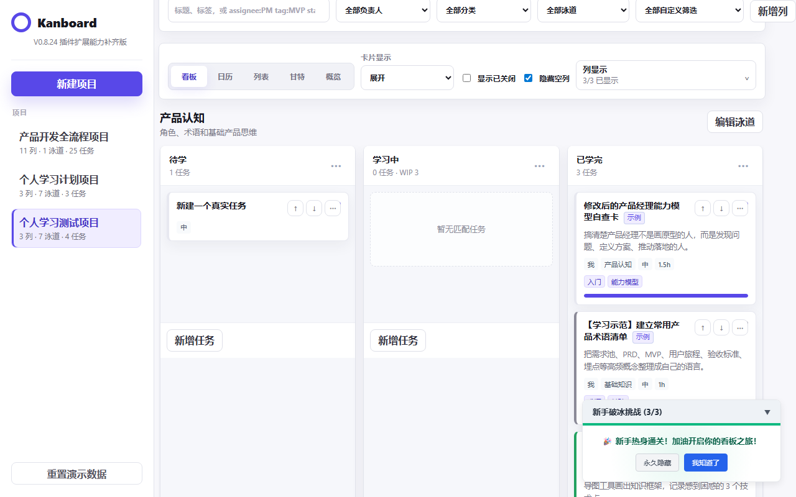
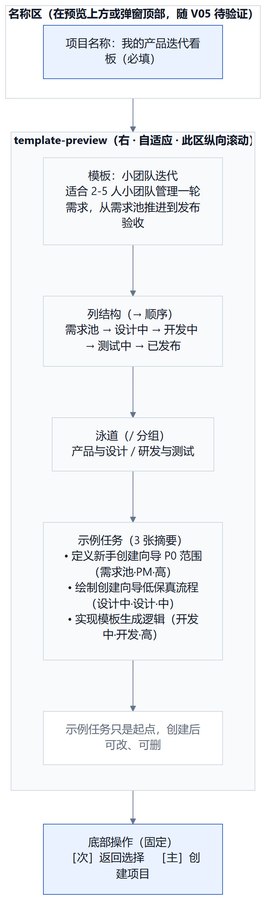
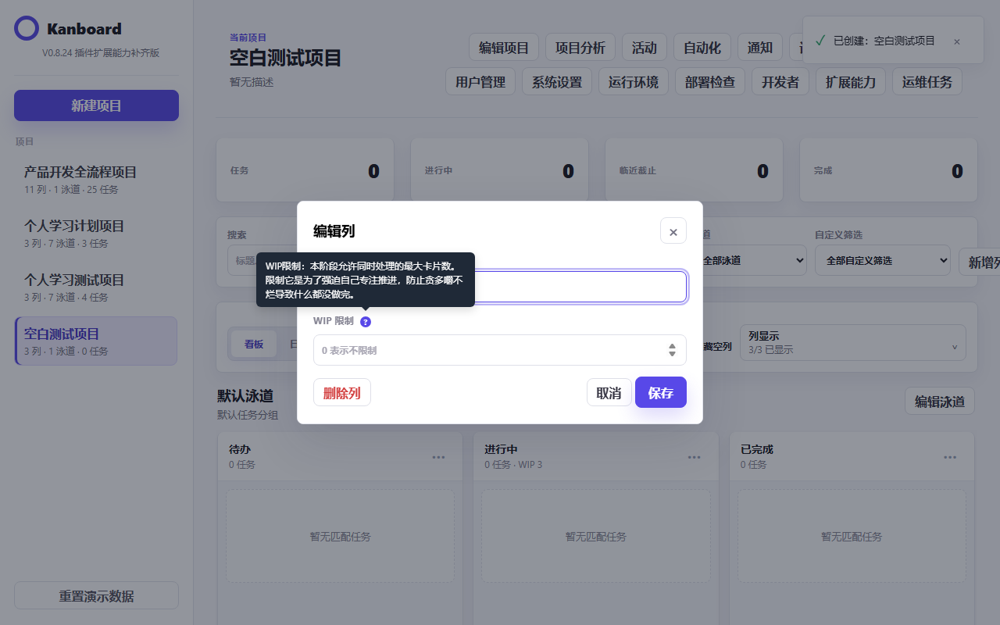
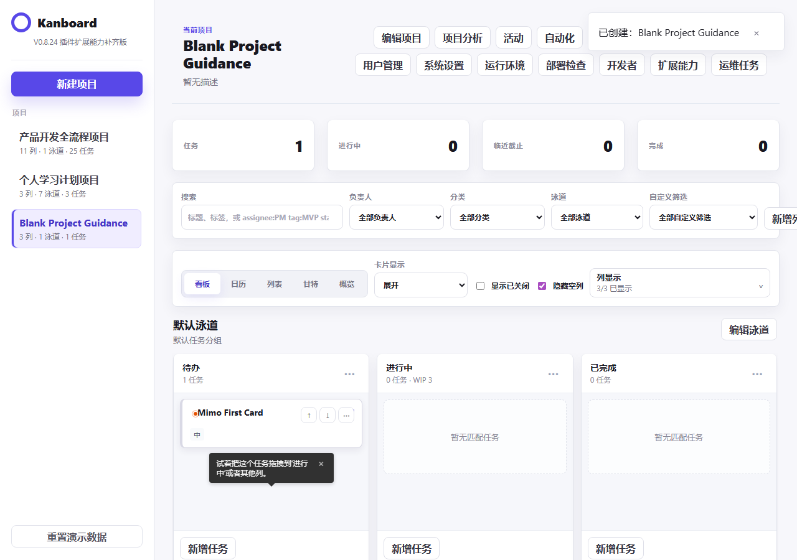
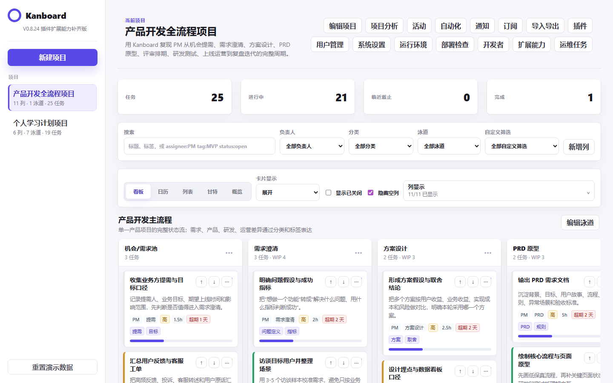
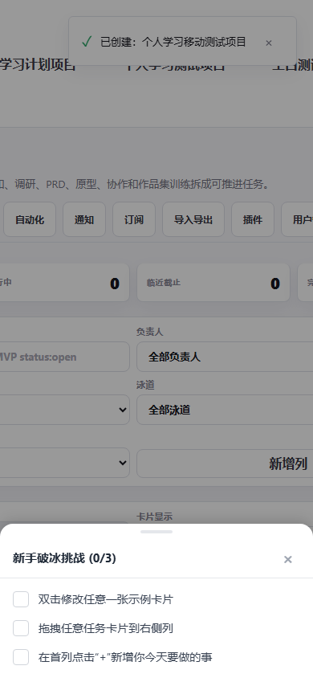
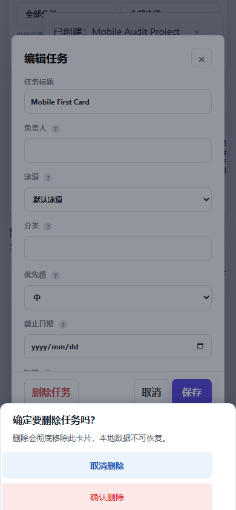

从熟悉的项目开始
直接进入个人学习或产品流程示例，不用先配置一张空白看板。
Pro 与团队计划开放内测申请，现有体验版继续免费使用。
查看价格适合个人与小团队的轻量任务看板
选择与你相近的项目场景，自动生成列、泳道和示例任务。你无需先学项目管理，只要把第一张卡片改成自己的计划。

从场景开始不再面对空白项目
边做边理解提示出现在操作现场
三步完成上手编辑、拖动、新建任务
帮助可以退出熟练用户保持原速
四种场景，一个清楚的起点
真实产品演示

看清整个过程。不是概念动画。视频直接录制自当前可交互产品，展示项目切换、模板入口以及看板、列表、日历之间的真实操作。
直接进入个人学习或产品流程示例，不用先配置一张空白看板。
创建前看见列、泳道和示例任务，确认结构合适后再开始。
在看板、列表和日历之间切换，同一批任务无需复制。

创建之后
新手清单不会让你先读教程。它只邀请你完成最关键的三个动作，每做完一步，进度立即更新。
把示例内容改成你的真实任务。
理解任务如何在流程中推进。
让看板从示例变成你的工作空间。
一条任务，四个动作
先把想法、需求和问题放进同一个入口。
把模糊的待办变成可以开始的任务。
每次移动都让进度对自己和团队可见。
用日历、列表或甘特图发现遗漏和风险。
帮助只在需要时出现
WIP、泳道、优先级等概念都有就地解释。桌面端悬停查看，移动端轻触打开。

轻量提示告诉你任务可以移动，完成后不再重复打扰。

看板只是开始
在看板、列表、日历、甘特图和概览之间切换。规划时间、检查进度或回到日常执行，不需要复制任务。

桌面规划，手机跟进
移动端使用单列布局、底部抽屉与就地提示。查看任务、完成新手清单和确认删除，都不需要缩放桌面页面。


轻量，不代表缺少保护
常见问题
适合第一次用看板管理个人学习、求职准备、个人开发或小团队任务的人。熟悉 Kanboard 的用户也可以直接创建空白项目。
不会。模板只生成一个可修改的初始结构。列、泳道、任务和示例说明都可以编辑或删除。
当前体验版把数据保存在浏览器的 localStorage 中。清除浏览器数据会移除本地项目，请不要把它用于正式生产数据。
不是。这是基于开源 Kanboard 构建的独立体验版本，不代表官方发布。它适合快速了解看板、模板和首次操作流程。
不用先成为看板专家